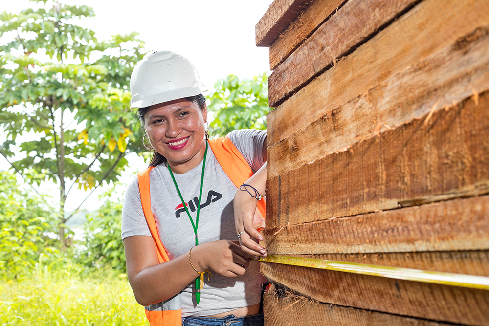
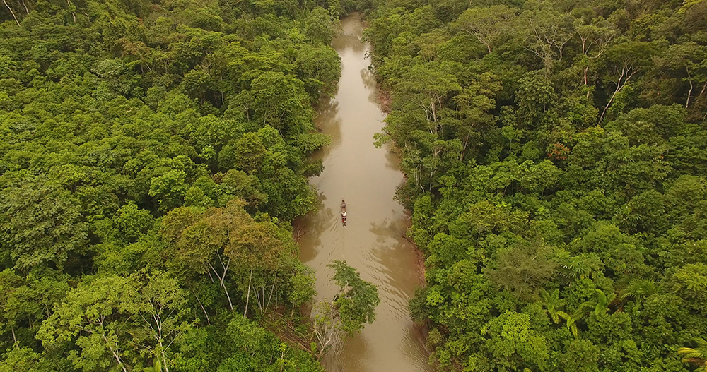

PLATAFORMA PARA
EL RECONOCIMIENTO DE BUENAS PRÁCTICAS
EN EL COMERCIO DE LA MADERA

BIENVENIDOS Y BIENVENIDAS
A LA PLATAFORMA PARA EL RECOONOCIMIENTO DE BUENAS PRÁCTICAS
EN EL COMERCIO DE MADERA
del Módulo de Promoción y
Competitividad del SERFOR
Aqui te mostraremos a los proveedores de madera que realizan buenas prácticas, contribuyendo a su comercio legal y sostenible.
SOBRE LA PLATAFORMA
Es un aplicativo que difunde información sobre los proveedores de la cadena de suministro de la madera en nuestro país, que cuentan con iniciativas calificadas por el Estado peruano como buenas prácticas en el comercio de madera.
A través de la plataforma se pueden realizar consultas y obtener reportes a partir de diferentes filtros (buenas prácticas, departamento, productos, especies, proveedor, RUC, entre otras).
Asimismo, la plataforma permite emitir una ficha con información de cada proveedor, conteniendo información de contacto, productos que oferta, buenas prácticas y otra información de interés para quienes la consultan.
Siendo los reconocimientos públicos un incentivo del Estado a quienes desarrollan buenas prácticas, a través de la plataforma se emiten Constancias de Reconocimiento por la implementación de buenas prácticas por el proveedor.
La plataforma realiza también un reconocimiento, a través de Constancias de Reconocimiento, a los regentes forestales que apoyan la implementación de buenas prácticas por parte de sus regentados.
Los objetivos de la Plataforma son:
- Reducir el riesgo de madera ilegal en las adquisiciones de madera y sus productos, tanto en las compras realizadas por el sector privado nacional e internacional, como en las efectuadas por las entidades públicas.
- Proveer información para el desarrollo de la debida diligencia por las empresas que adquieren madera y sus productos.
- Diferenciar a los proveedores que realizan buenas prácticas en el comercio de madera, mejorando su posicionamiento en el mercado.
- Promover la adopción de buenas prácticas en el comercio de madera por los proveedores de la cadena de suministro de la madera en el país, al tener la posibilidad de ser expuestos en la plataforma debido a sus calificaciones por la adopción de tales prácticas.
Considerando la posibilidad de contar con información actualizada, confiable y puesta a disposición para su consumo por la plataforma, la plataforma ha incorporado seis buenas prácticas, las mismas que son acreditadas por el SERFOR, por el OSINFOR y por la certificación internacional FSC. Estas buenas prácticas son:
- Uso del Libro de Operaciones Electrónico de títulos habilitantes (LOE-TH), acreditado por el Módulo de Control conducido por el SERFOR
- Uso del Libro de Operaciones Electrónico de Centros de Transformación Primaria (LOE-CTP), acreditado por el Módulo de Control conducido por el SERFOR
- Calificación “Muy bueno” en el Reporte de Títulos Habilitantes Supervisados con Buen Comportamiento, acreditada por el SIGOSFC del Osinfor
-
Certificación forestal voluntaria
- Certificación de Manejo Forestal (FM/COC), acreditada por el FSC
- Certificación de madera controlada (FM/CW), acreditada por el FSC
- Certificación de cadena de custodia (COC), acreditada por el FSC
Descripción de las buenas prácticas
reconocidas en la
plataforma:
-

El LOE-TH es un aplicativo del Módulo de Control del Sistema Nacional de Información Forestal y de Fauna Silvestre (MC-SNIFFS), conducido por el SERFOR, en la actualidad de uso voluntario por los titulares de los títulos habilitantes que aprovechan madera (concesiones, permisos y autorizaciones) y que permite transparentar la información de la trazabilidad de la madera desde el árbol en pie debidamente codificado en el censo, pasando por el registro de los árboles talados, trozados, transformados en bosque si fuera el caso, el despacho de las trozas y/o el despacho de productos transformados si correspondiera, hacia los centros de transformación, lugares de acopio, depósitos y centros de comercialización. En todo este proceso se mantiene una correlación con la codificación de origen, aprobada en el plan de manejo forestal.
La información del LOE-TH es disponible tanto para la autoridad de la jurisdicción como para el SERFOR en su condición de autoridad nacional y permite conocer en tiempo real la situación de las trozas (taladas, trozadas, acopiadas para despacho y despachadas), así como de los árboles censados y aprobados en el plan de manejo forestal que se encuentran todavía en pie.
El usuario que adopta el LOE-TH, emite las guías de transporte forestal a través de él, y éstas cuentan con código QR que puede ser leído por la autoridad durante el recorrido de las trozas o productos a su primer destino con cualquier dispositivo en que se descargue la aplicación.
-
 Uso de Libro de Operaciones Electrónico de Centros de Transformación Primaria (LOE-CTP)El LOE-CTP es un aplicativo del Módulo de Control del Sistema Nacional de Información Forestal y de Fauna Silvestre (MC-SNIFFS), mediante la cual los titulares de dichos centros registran y actualizan la información de ingresos y salidas de los productos y subproductos forestales maderables.
Su adopción es en la actualidad voluntaria por los titulares de los centros de transformación primaria que procesan madera y permite transparentar la información de la trazabilidad de la madera desde el ingreso de las trozas a dichos centros, su procesamiento o consumo, los productos obtenidos y la salida de dichos productos hacia su siguiente destino. En todo este proceso se mantiene una correlación, por lotes de madera procesada, con la codificación de origen, a partir de las guías de transporte forestal con las cuales se ingresó la materia prima al centro de transformación.
La información de LOE-CTP es disponible tanto para la autoridad de la jurisdicción como para la autoridad nacional y permite conocer en tiempo real los productos disponibles, así como la disponibilidad de trozas que aún no han sido utilizadas y se encuentran dentro del CTP.
El usuario que adopta el LOE-CTP emite las guías de transporte forestal a través de él y éstas cuentan con código QR que puede ser leído por la autoridad durante el recorrido de los productos a su siguiente destino con cualquier dispositivo en que se descargue la aplicación.
-
 Calificación “Muy bueno” en el Reporte de Buen Comportamiento de Títulos Habilitantes, conducido por OSINFOREl Reporte de Buen Comportamiento de Títulos Habilitantes elaborado por OSINFOR, se basa en información histórica de los resultados de las supervisiones realizadas por esta entidad desde el año 2015 a los títulos habilitantes, en las cuales se evalúa la implementación de sus planes de manejo y/o el cumplimiento de sus obligaciones contractuales.
OSINFOR ha definido criterios para calificar el desempeño de los títulos habilitantes, siendo que los títulos habilitantes que tienen calificación “Muy bueno” son los que tienen un desempeño superior.
-

La certificación forestal voluntaria es un proceso de evaluación, por una entidad independiente debidamente acreditada, de las operaciones de manejo de un área determinada de bosque y/o de la cadena de custodia, en función a determinados principios y criterios aceptados internacionalmente que garantizan el manejo forestal sostenible1.
Con la finalidad de asegurar que el producto que adquiere el comprador o consumidor final procede de un bosque bajo manejo responsable, la certificación cuenta con estándares aplicables a toda la cadena de suministro de la madera, partiendo del bosque o plantación hasta el destino final del producto.
El FSC (Forest Stewardship Council-FSC) es el esquema internacional de certificación forestal que opera en el Perú, aplicable en bosques y plantaciones (primer eslabón de la cadena de suministro de la madera), en centros de transformación primaria y secundaria de la madera, y en comercialización de productos maderables para la exportación (brokers y traders).
Los estándares de certificación del FSC de interés para la plataforma son tres, siendo dos de ellos para bosques: la Certificación de Manejo Forestal (FM/COC) y la Certificación de Madera Controlada (CW/FM). Las plantaciones aplican también el estándar de Certificación de Manejo Forestal (FM/COC). El tercer estándar es el de Cadena de Custodia (COC), que se aplica a lo largo de la cadena de suministro de la madera, luego de que ésta ha salido del bosque o plantación hasta su destino final.
1 Artículo 5 del Reglamento para la Gestión forestal, aprobado por Decreto Supremo 018-2015—MINAGRI.
4.1. Certificación de Manejo Forestal (FM/COC)
El estándar de Certificación de Manejo Forestal (FM/COC) es el estándar más alto de FSC para certificación del manejo forestal y su alcance es tanto el manejo forestal como la cadena de custodia del bosque, es decir, asegura la calidad del manejo y reporta el recorrido de la madera desde el árbol en pie hasta el punto de despacho hacia afuera del área de manejo, a través de un sistema de registro en cada etapa del aprovechamiento, que inicia con los árboles aprobados en el plan de manejo por la autoridad forestal competente y llega hasta que las trozas salen del bosque o plantación para su posterior procesamiento o comercialización.
Este certificado se otorga tanto a titulares de bosques como de plantaciones que, mediante una auditoría independiente, demuestran que cumplen con el estándar de Certificación de Manejo Forestal (FM/COC). El producto obtenido es Madera FSC 100%.
4.2. Certificación de madera controlada (CW/FM)
Es un estándar aplicable también a empresas o entidades de manejo forestal, cuyo fin es garantizar que la madera no procede de fuentes “inaceptables” o “controversiales”, es decir, no corresponde a ninguna de las siguientes categorías: a) madera aprovechada ilícitamente; b) madera aprovechada en violación de derechos tradicionales o civiles; c) madera aprovechada en bosques cuyos altos valores de conservación estén amenazados por actividades de manejo; d) madera aprovechada en unidades de manejo forestal que se estén convirtiendo a plantaciones o usos no forestales; ni e) madera aprovechada de bosques en los que se planten árboles modificados genéticamente. Verifica también la cadena de custodia del bosque, es decir, el recorrido de la madera desde el árbol en pie hasta el punto de despacho hacia afuera del área de manejo.
Este certificado se otorga solo a titulares de bosques que, mediante una auditoría independiente, demuestran que cumplen con el estándar de Madera Controlada (CW/FM). El producto obtenido es Madera Controlada FSC.
4.3. Certificación de Cadena de Custodia (COC)
Tiene como objetivo controlar el flujo de materiales certificados (FM o CW) a través de la cadena de suministro, de manera de evitar su contaminación o mezcla con material no certificado durante los procesos de transporte, transformación industrial y comercialización, permitiendo el rastreo de la madera desde el bosque a través de todo el proceso de producción hasta el comprador o consumidor final. La COC asegura que el producto de madera al final de la cadena de suministro procede íntegramente de material certificado o controlado. El producto obtenido es FSC 100% cuando procede íntegramente de madera certificada FM/COC, Madera Controlada FSC cuando procede íntegramente de madera CW/FM, o FSC mixto cuando procede íntegramente de una mezcla de ambos.
La plataforma incluye a proveedores de la cadena de suministro de la madera en nuestro país, que cuentan con iniciativas calificadas por el Estado peruano como buenas prácticas en el comercio de madera. Están también incluidos los regentes forestales que apoyan la implementación de buenas prácticas por parte de sus regentados.
La cadena de suministro de la madera es el conjunto de estadíos por los que pasa la madera desde que se encuentra en el bosque o plantación, hasta que llega al consumidor final convertida en un producto consumible por éste. Los proveedores de madera con buenas prácticas en el comercio de madera que se visualizan en la presente plataforma se ubican en los distintos estadíos o eslabones de dicha cadena.
Dentro de cada eslabón de la cadena de suministro de la madera existen diferentes proveedores. Para efectos de la plataforma, se han identificado los siguientes proveedores dentro de cada eslabón:
-
Primer eslabón: Madera rolliza
1.1. Título habilitante en bosque
Los títulos habilitantes son actos de naturaleza administrativa mediante los cuales el Estado otorga a particulares el derecho de aprovechamiento de los recursos forestales y de fauna silvestre y derecho a los beneficios económicos procedentes de los servicios de los ecosistemas que se desprendan de su manejo2.
Los títulos habilitantes en bosque incluidos en la plataforma comprenden el otorgamiento del derecho para el aprovechamiento sostenible de los recursos forestales maderables existentes en el bosque y, de acuerdo a la modalidad de aprovechamiento que les corresponde, son:
- Concesiones forestales con fines maderables: Son áreas de bosques naturales ubicadas en tierras del Estado (Bosques de Producción Permanente), otorgadas a través de contratos de concesión a privados, por 40 años renovables, para el aprovechamiento sostenible de la madera de dichos bosques.
- Concesiones forestales para productos forestales diferentes a la madera: Son áreas de bosques naturales ubicadas en tierras del Estado (dentro o fuera de los Bosques de Producción Permanente), otorgadas a través de contratos de concesión a privados, por 40 años renovables, para el aprovechamiento sostenible de los productos forestales diferentes a la madera contenidos en dichos bosques, a quienes la autoridad competente ha aprobado de manera complementaria el aprovechamiento sostenible de madera.
- Permisos de aprovechamiento forestal en tierras de comunidades nativas y campesinas: Son permisos otorgados por la autoridad forestal competente, para que las comunidades nativas y campesinas puedan realizar el aprovechamiento sostenible de la madera de los bosques naturales dentro de las tierras de la comunidad, sean dichas tierras tituladas, posesionadas o bajo cesión en uso.
- Permisos de aprovechamiento forestal en bosques de predios privados: Constituyen permisos otorgados por la autoridad forestal competente, para que los titulares de predios privados con bosques naturales dentro de su propiedad puedan realizar el aprovechamiento sostenible de la madera de dichos bosques.
- Autorizaciones en bosques locales: Son autorizaciones otorgadas a los beneficiarios de bosques locales con fines maderables, para el aprovechamiento sostenible con fines comerciales de dichos recursos. Los bosques locales son unidades de ordenamiento forestal creadas a solicitud de un gobierno local.
2 Artículo 60 de la Ley Forestal y de Fauna Silvestre, Ley N° 29763.
1.2. Plantación
Una plantación es un bosque instalado y cultivado por el hombre. En la presente plataforma se incluyen plantaciones con fines comerciales instaladas en predios privados y en tierras de comunidades nativas y campesinas, incluidas las plantaciones en macizo y en sistemas agroforestales.
-
Segundo eslabón: Madera con primera transformación
Dentro de este eslabón se considera un solo tipo de proveedor:
2.1. Centro de transformación primaria
Instalación industrial o artesanal de procesamiento, fija o móvil (talleres, plantas, aserraderos portátiles u otros), que utiliza madera rolliza o en bruto como materia prima. Tiene como outputs la madera aserrada, madera debobinada y chips.
-
Tercer eslabón: Madera con segunda transformación
Para efectos de la plataforma, se considera un solo tipo de proveedor dentro de este eslabón:
3.1. Centro de transformación secundaria
Instalación industrial o artesanal de procesamiento, fija o móvil (talleres, plantas, equipos portátiles o móviles), que utiliza como materia prima productos maderables de primera o segunda transformación para obtener un producto con un mayor procesamiento.
-
Cuarto eslabón: Comercialización de madera
Si bien la comercialización de la madera se encuentra incluida en el eslabón del tipo de producto (madera rolliza, madera con primera transformación, madera con segunda transformación), para efectos de la plataforma se ha considerado pertinente agrupar la comercialización de la madera de todos los eslabones en uno solo, debido a que un mismo negocio puede comercializar madera de más de un eslabón. Para estos efectos se define como único tipo de proveedor en este eslabón al “Comercializador”.
4.1. Comercializador
Persona natural o jurídica que compra y vende madera y/o sus productos, sin realizar ninguna transformación de estos productos, ni directamente, ni a través de servicios de terceros. Para efectos de la plataforma, se incluyen los siguientes tipos de comercializadores:

Centro de comercialización:
Establecimiento en el cual se comercializa madera al estado natural y/o con procesos de transformación primaria y/o secundaria.
Establecimientos que se dedican al almacenamiento y comercio de productos forestales maderables.
Puede ser madera rolliza, como productos maderables de primera transformación
Depósito o centro de acopio:
Establecimiento en el cual se almacena madera al estado natural o con procesos de transformación primaria, con el fin de ser comercializada directamente o transportada a un nuevo destino para su posterior comercialización.
Distribuidor:
Agente que distribuyen un producto para su comercialización, actuando de intermediario entre el productor y el detallista o minorista.
Broker o trader (exportador):
Agente que presta servicios para exportar productos maderables con diferentes grados de transformación.